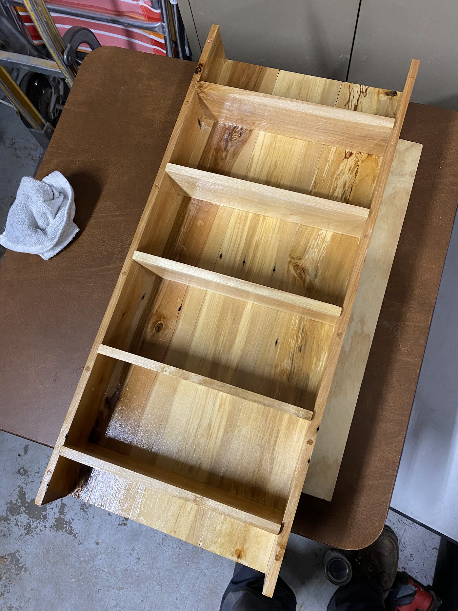
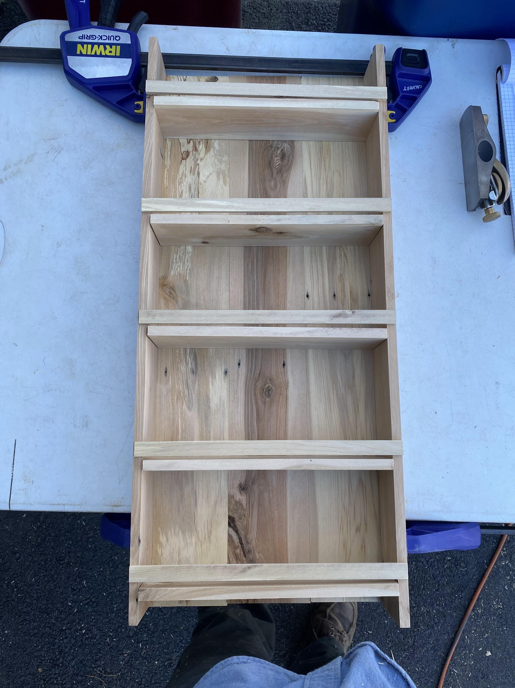
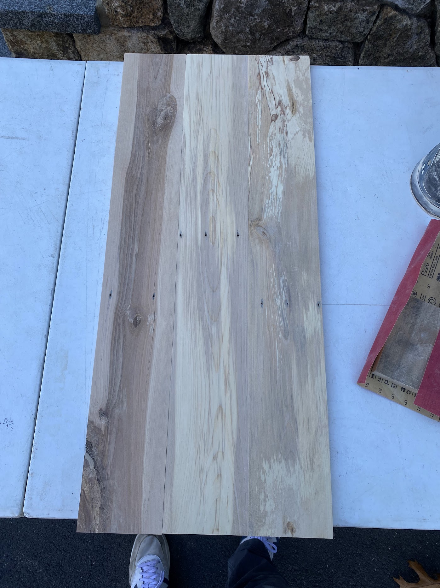
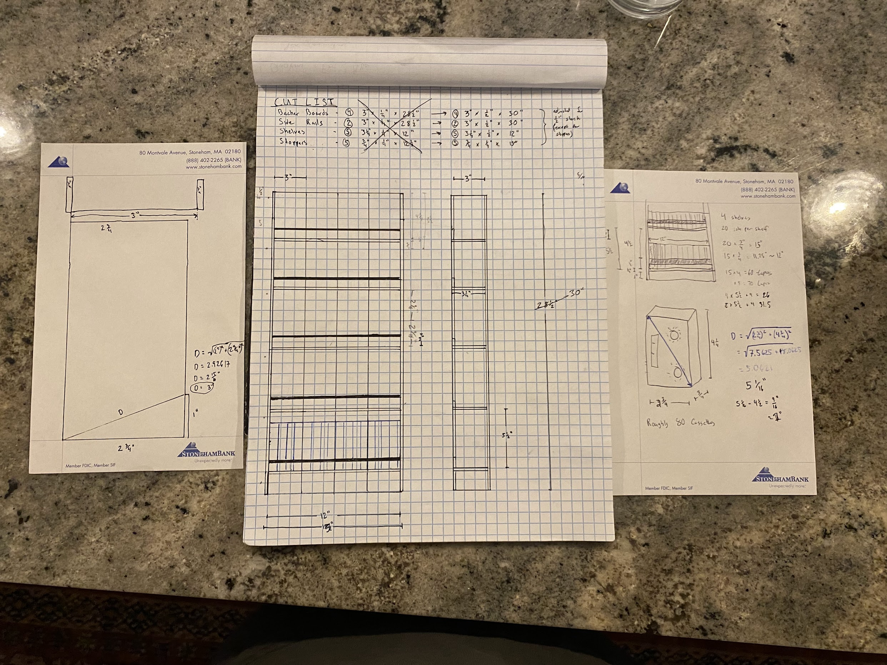

Project
Cassette Holder
A custom storage piece designed to make a growing cassette collection easy to browse, remove, and enjoy.
Overview
This piece began with a simple and more personal idea: creating a dedicated place for my girlfriend to store and enjoy her cassette collection. After picking up a couple of free oak pallets on a date, I decided to turn that material into a functional storage piece that could hold roughly fifty tapes while still feeling intentional and well made.
Design Process
The design challenge was not just storing the tapes, but making them easy to remove and replace without the piece becoming awkward to use. That required working through the geometry of how the cassettes would sit and rotate within the openings. The angles had to be considered carefully so that each tape could be selected easily and comfortably, rather than pinched out with difficulty.
Material and Execution
Using reclaimed oak pallet wood added another layer to the build, requiring the material to be cleaned up, processed, and worked into a finished piece that felt more refined than its origin might suggest. The final result works exactly as intended: the cassettes rotate out smoothly, selecting one is easy, and the piece succeeds both as useful storage and as something made with care and purpose.
Gallery
Process and detail views




Design
SketchUp model and design studies
The design required careful consideration of cassette rotation and accessibility.